昨晚是我第一次看世界杯，场上的每分每秒都牵动着我的神经，虽然不了解克罗地亚队，但是他们优雅从容、坚持不懈的体育精神已经感染了我。
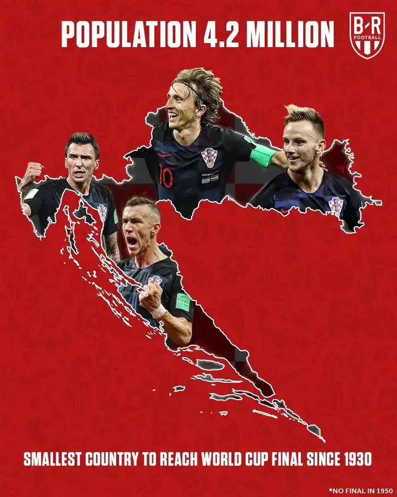
我从心底里希望克罗地亚队能够夺得冠军。
虽然最终失败，但是我永远记住了这只球队。
因此这场球赛，我喜欢上了沉重冷静、喜怒不形于色的教练兹拉特科·达里奇和球员莫德里奇。
我欣赏克罗地亚女总统基塔诺维奇的优雅和亲民。
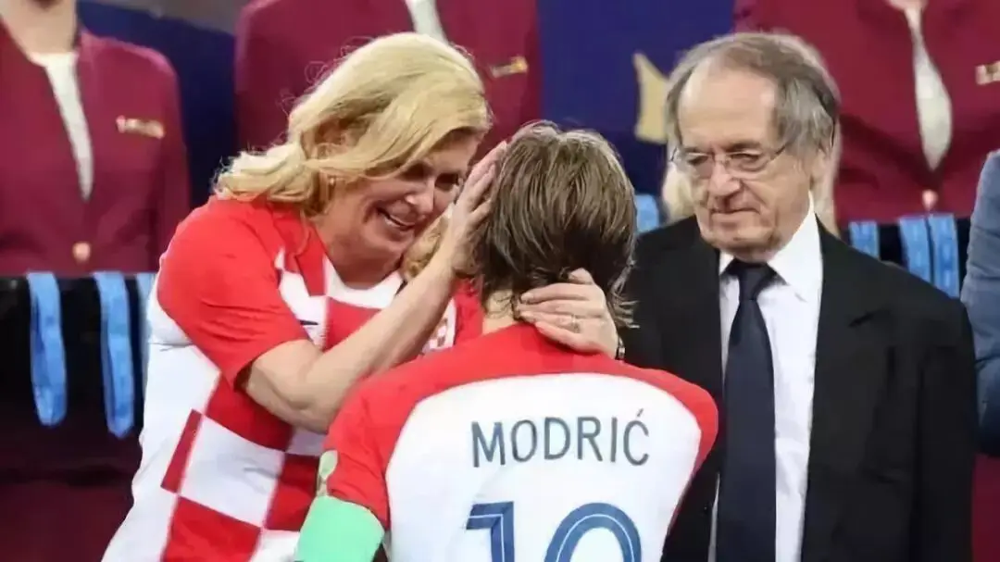
△ 基塔诺维奇安慰莫德里奇
后来，当我了解到这只球队很多队员都是成长于战乱和伤痛中时，我对这只球队更是肃然起敬。
1990年，一位摄影师在克罗地亚拍摄有关狼的纪录片，意外拍下这样一组画面：一名金发小男孩正在崎岖不平的山路上，穿着明显不合身的外套放羊，而这位小男孩，正是卢卡·莫德里奇。
这就是世界杯的魅力，不论你是总统还是清洁工，不论你是白人还是黑人，不论你是白左还是保守主义者。
你的心都会跟着场上的球员一起跳动，他们紧张的时候你也能感受到那份紧张，他们在场上失意时，你也完全能体会那种无奈和遗憾。
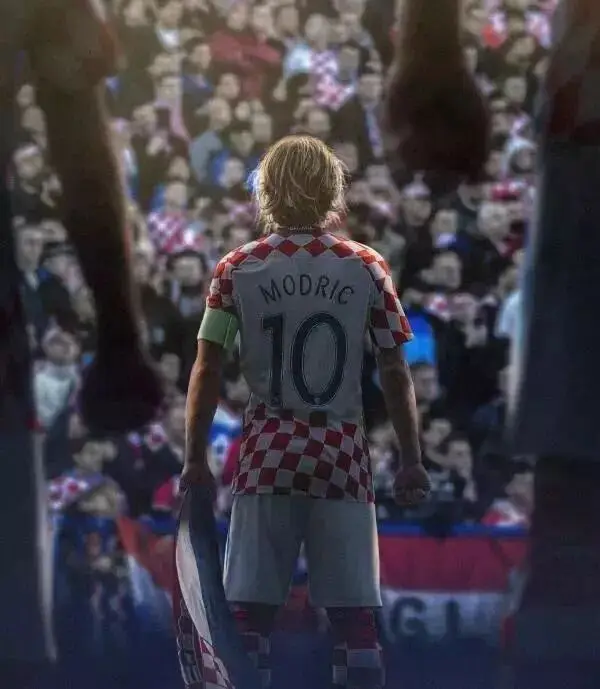
球员在世界杯上所散发出的力量也可以瞬间传递给每个人，其影响之深不可估量，甚至可以改变一个国家。
1954年的瑞士世界杯决赛上，德国对阵强大的匈牙利队，此前匈牙利曾8：3吊打德国队，匈牙利在决赛中获胜似乎毫无悬念。
果不其然，匈牙利在比赛中2：0领先于德国，可是后面德国奋勇直追连入三球，最终以3：2成功逆袭。
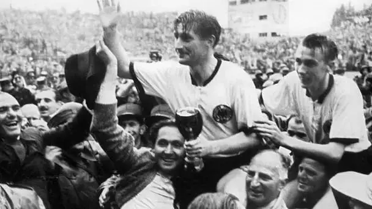
所有的德国人高声呐喊、热泪盈眶，为这场奇迹彼此拥抱。
这几乎是德国二战战败后九年里的第一次国家意义上的胜利，此前德国一直笼罩在战败下的负罪和荒败中。
所以，这场胜利对德国走出民族伤痛并重拾希望而言意义深远，一些历史学家甚至认为这是一个国家的重生。
德国政治学者海因里希曾说：“那才是德意志联邦真正诞生的日子。”
今天我们要介绍的高分电影《伯尔尼的奇迹》就改编自这件真实事件。
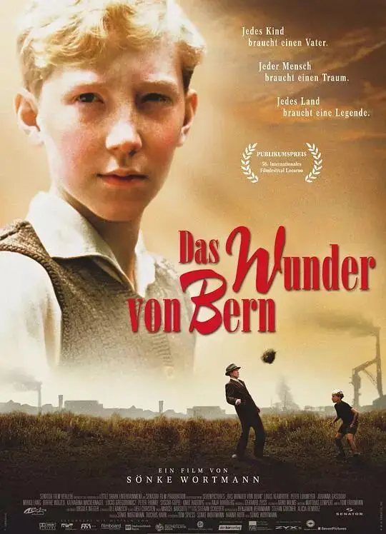
这次改编非常成功，导演并没有干巴巴地直接展现这场球赛，而是以小见大，花了大量篇幅表现了一个被足球改变的德国家庭。
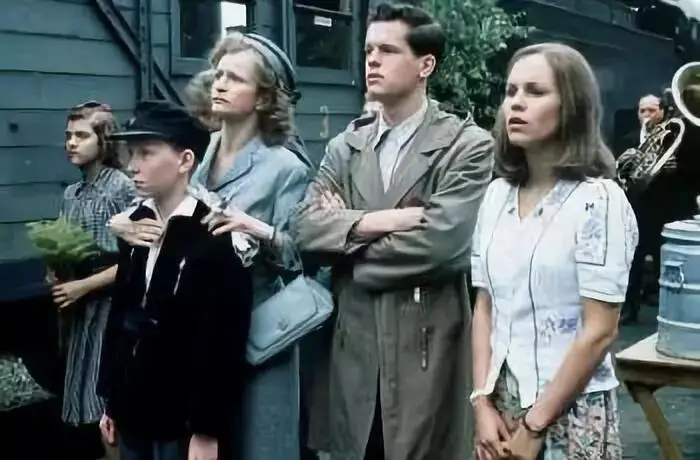
这个家庭是当时德国的缩影。
父亲理查德参加了二战，并被苏联俘虏了12年，瑞士世界杯前夕，他被放回国。
回来后，理查德难以适应正常的家庭和工作，他虽然深深地爱着自己的妻子和孩子，但却不知道怎么和大家相处，对待家人总是很严苛甚至不近人情。
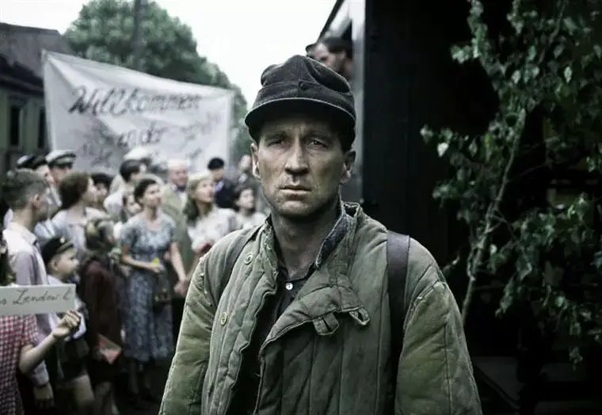
而理查德还算幸运，可以有机会重新开始，有很多人则死在了战场上，只留下苦苦等待的家人。
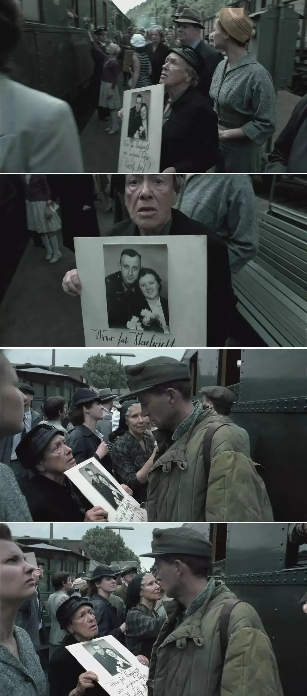
理查德的妻子则是那些忍辱负重、苦苦坚持的德国人，丈夫在外打仗，她一个人经营着一个小酒馆来支撑着整个家庭。
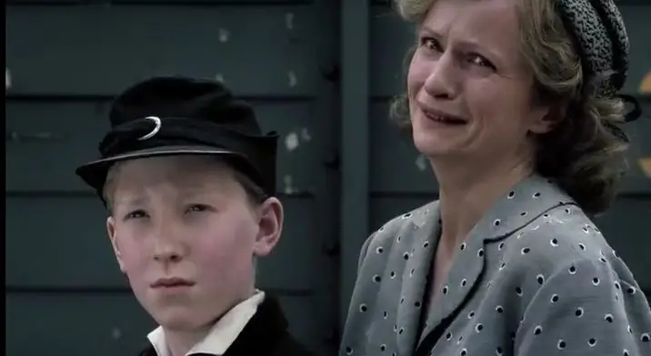
大儿子布鲁诺则代表东德，崇尚共产主义苏联，心底里痛恨爸爸作为纳粹中一员的所作所为，所以当妈妈说“不知苏联人怎么虐待你父亲”时。
大儿子却有点义愤地说：“德国士兵会这么悲惨，是因为没事去惹苏联人”。
父子两人难以友好相处，大儿子最后离家出走，跑往东德。
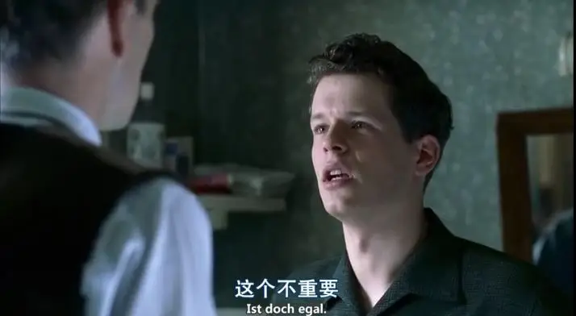
女儿英格里特则代表西德，她崇尚自由，生活上想要按照自己的想法过，性格保守的父亲自然对女儿的举止充满了警惕和敌意。
尤其是当他看到女儿在和英国占领军士兵（曾经的敌人）调情时，理查德没给英格里特好脸色，并明确禁止女儿与那个士兵交往。
而最让理查德难以面对的是12岁的小儿子马蒂亚斯。
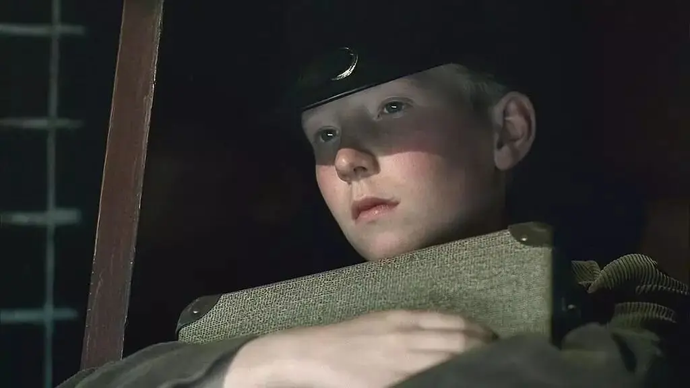
因为理查德上前线的时候，马蒂亚斯还在妻子的肚子里，这次是他们的第一次见面。
因此理查德对于马蒂亚斯的情感更加复杂。
明明是自己的孩子，但却很陌生，理查德完全不知道怎么与马蒂亚斯相处。
作为德国新生代的马蒂亚斯，他没有直接参加战争，却不得不受战争牵连。
为了生活，马蒂亚斯很早就非常懂事，他会在酒馆里卖香烟来补贴家用。
足球是马蒂亚斯最大的爱好，他可以为了当个候补在旁边一直站着，只为了有机会上去踢几脚。
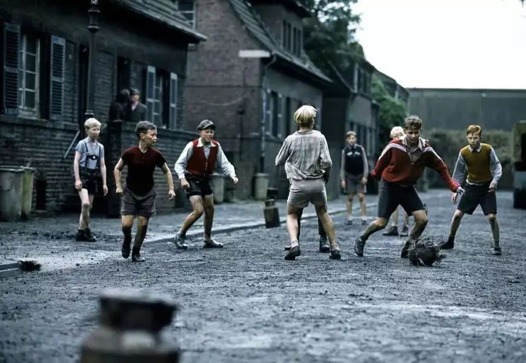
最让马蒂亚斯自豪的是，国家队球员拉恩是他的朋友，马蒂亚斯总是帮拉恩提包，他为自己能当拉恩的跟班小弟而乐此不疲。
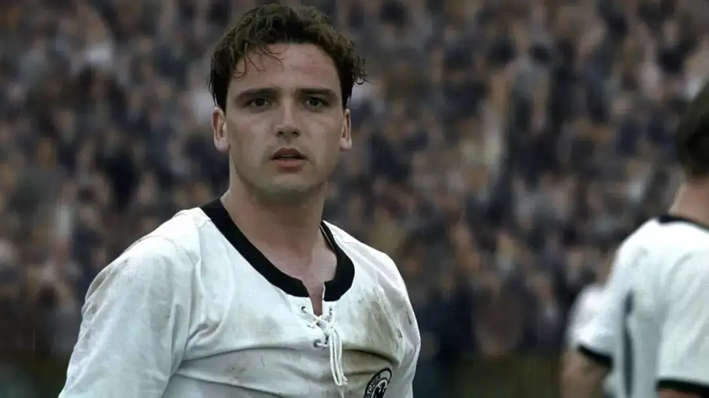
世界杯在即，马蒂亚斯在教堂里为拉恩能够上场而祈祷。
理查德非常生气自己的孩子为一个坐冷板凳的球员而祈祷，却忽视了坐在一旁的自己。
他借口说马蒂亚斯这样的行为是一种亵渎并给了他一记耳光，并告诉马蒂亚斯：不准哭，联邦德国的小孩都不哭的。
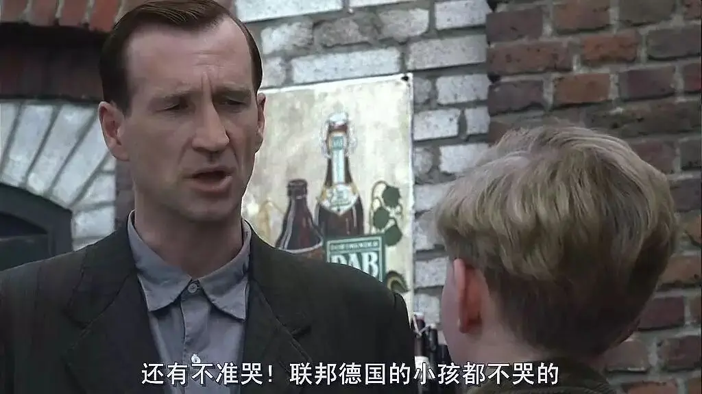
马蒂亚斯有拉恩，布鲁诺有共产主义梦想，女儿则有自己的爱情。
理查德在家庭中找不到属于自己的位置。
他的出现甚至让原本正常的家庭变得不和睦，三个孩子都非常讨厌他。
他想要做出改变并寻求孩子们的原谅。
于是，理查德为大家准备了一顿丰盛的午餐。
正当大家品尝着父亲的手艺，欣喜着父亲的改变时，马蒂亚斯忽然意识到了什么，他急忙跑出去发现自己养的兔子不见了。
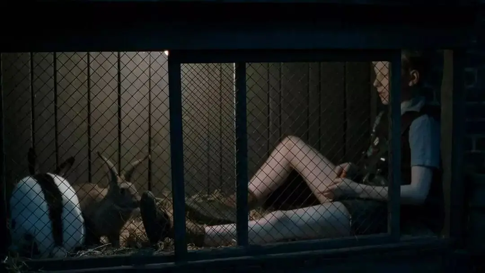
小马蒂亚斯慌张地问父亲，饭桌上的肉是哪里来的！
原来因为家里穷困，理查德未经小儿子同意便杀了兔子来做菜。
马蒂亚斯无法原谅自己的父亲，拼命跑向远方。
妈妈后来安慰马蒂亚斯：
失去可爱的兔子就让你如此伤心，这样的事情在你父亲的眼前每天都在发生.....给他一些时间吧，一切都会好起来的。
马蒂亚斯第一次感同身受父亲所受的痛苦，他从心底里原谅了可怜的父亲。
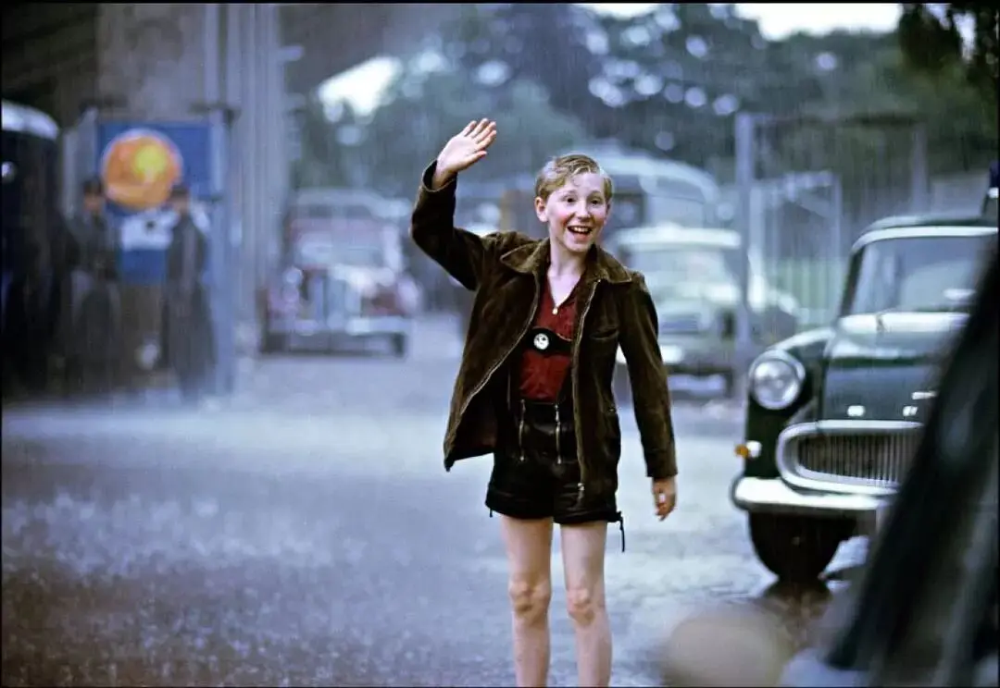
面对充满差异的家庭，父亲的迷茫是整个德国的迷茫，如何走出战争阴影，如何面对过去，美苏冷战之下又何去何从……
德国没有答案，父亲也没有答案。
他向牧师寻求帮助，牧师告诉父亲：唯有倾诉内心隐痛才能取得子女谅解。
敞开而不是故作坚强才能走向拥抱。
可是要怎么迈出这一步！
而足球成为了整个家庭的润滑剂，它超越年龄、性格和意识形态，所有人都爱足球。
理查德年轻时候也是一个足球好手，在他的点拨之下，马蒂亚斯在小伙伴中由替补队员变成了主将。
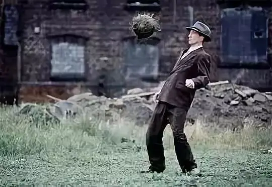
随着世界杯赛事的进展，国家队和拉恩牵动着小马蒂亚斯的心，而小马蒂亚斯的需要也牵动着理查德的心。
决赛之际，令马蒂亚斯没有想到的是，这位严厉的父亲竟然要连夜开车带着自己去伯尔尼看决赛。
伴随着令人紧张激动的比赛进展，理查德也终于成为了孩子们心中不可替代的父亲。
理查德学会了敞开，学会了表达自己的软弱，当他看着大儿子留给他的离别信时，他在马蒂亚斯面前哭的像个小孩。
马蒂亚斯却很可爱地安慰他：“联邦德国的孩子有时也可以哭一哭。”
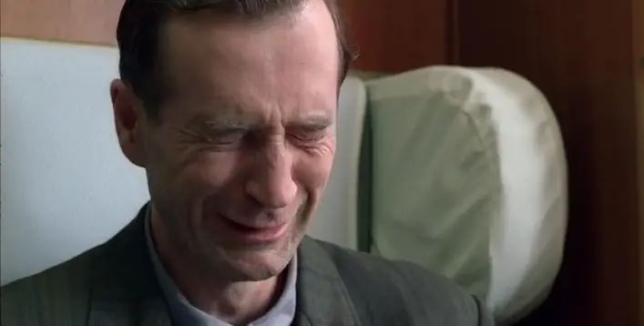
除了这条主线之外，电影还通过另外两条并行的线索来丰富电影的内涵。
一条是关于一对刚刚结婚的年轻夫妻，男人热爱足球，是一个足球解说员，而女人则对足球毫无兴趣。
因为世界杯，女人精心策划的蜜月计划不得不泡汤， 她心有不甘地跟着丈夫来到了世界杯的现场。
令他们意想不到的是，他们的感情却随着世界杯的高涨而不断升温。
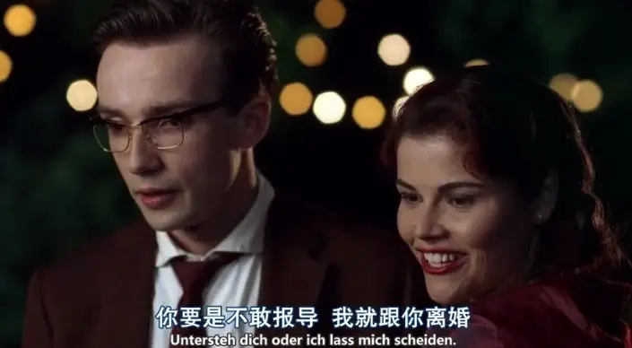
另外一条很有意思的线索就是国家队教练赫尔伯格与德国球迷、队员拉恩之间的关系。
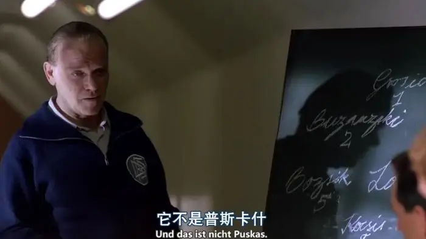
在第一次被匈牙利8：3吊打后，赫尔伯格收到来自国内的无数批评信：“你应该去最近的地方找根绳子上吊，然后再将绳子回收利用.....
国内的球迷难以信任赫尔伯格，而这次失败赫尔伯格也确实难辞其咎，面对颓势，他一意孤行，始终不愿意让拉恩上场。
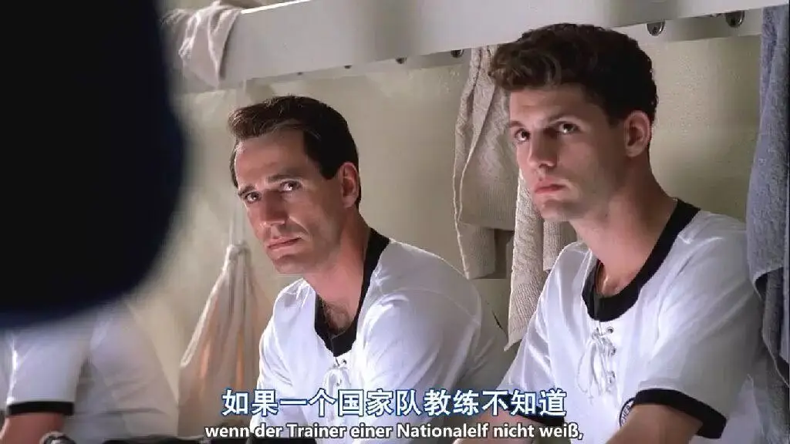
面对压力，赫尔伯格不得不正视自己的偏执和骄傲。
在后来的比赛中，赫尔伯格学会了聆听队员的意见，他选择了信任拉恩。
拉恩也原谅了一贯忽视自己的主教练。
在最后的决赛上，拉恩不负所望，他的两次大力射门帮助联邦德国队将比分扳为2-2平，并在比赛即将结束前反败为胜。
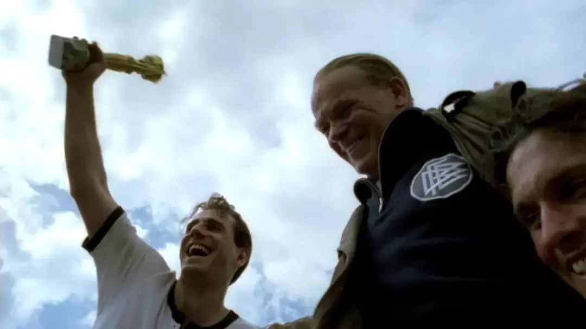
就这样，在信任和拥抱中伯尔尼的奇迹诞生了！
奋进、团结、彼此敞开的精神也随着世界杯浸入到每个德国人的心中。
这场胜利对德国的意义非常重大，如果说马歇尔计划给二战后的德国输了血，那么伯尔尼的奇迹就是将血液泵至全身的心脏。
在它坚强有力的跳动下，德国在上世纪五十年代创造了经济奇迹，在很短的时间内恢复了国民经济的运行和发展，达到并超过了战前水平！
这就是世界杯的影响力，一个国家足球队的精神面貌可以反映和影响整个国民的状态。
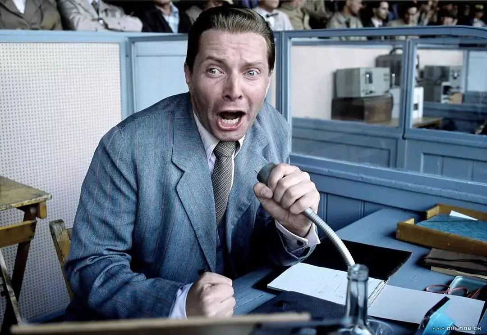
希望我们的国足也能像克罗地亚球队一样，是因为真正热爱足球而站在球场上挥洒汗水，而不是因为面子和油水在上面硬撑。
是不是真正喜欢、是不是拼尽全力、是不是用心，观众看到的、感受到的不差分毫，这欺骗不了别人，顶多只能当个跳梁小丑骗骗自己而已。
关注并回复：伯尔尼的奇迹
获取电影资源
相关推荐：
奥斯卡最佳外语片《修女艾达》| 历史虽然静默，但都在上帝掌管之下
人！你到底从历史中学到了什么
继《沉默》之后，又一部必刷的信仰力作
如果电影可以是虔诚的，那就应该这样！
这里没有挑逗你眼目情欲的小鲜肉
也没有挑动你肉体情欲的段子
更没有膨胀你今生骄傲的鸡血
我们只在乎那些最质朴真诚的作品
在那里我们才能恢复真正的想象力
我们也坚信这才是我们真正需要的

ID:Six_hundred_hits
长按二维码，一键关注
【六百击】
-END-
电影评论
尽情分享朋友圈

苹果打赏通道
小提示：文末广告是腾讯配送广告，内容与本号无关，但您的每次点击（无需反复点）都会给平台带来几毛收益，欢迎您点击支持六百击。